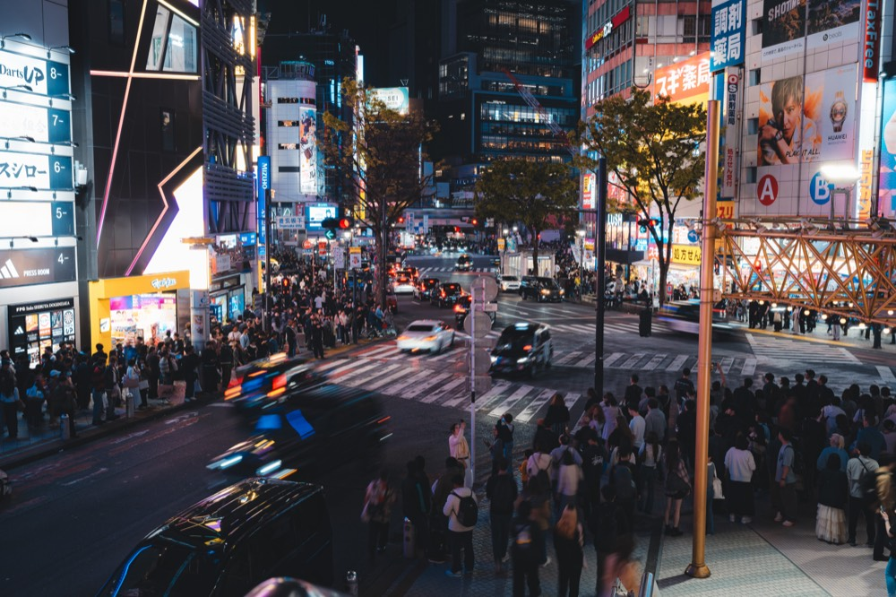
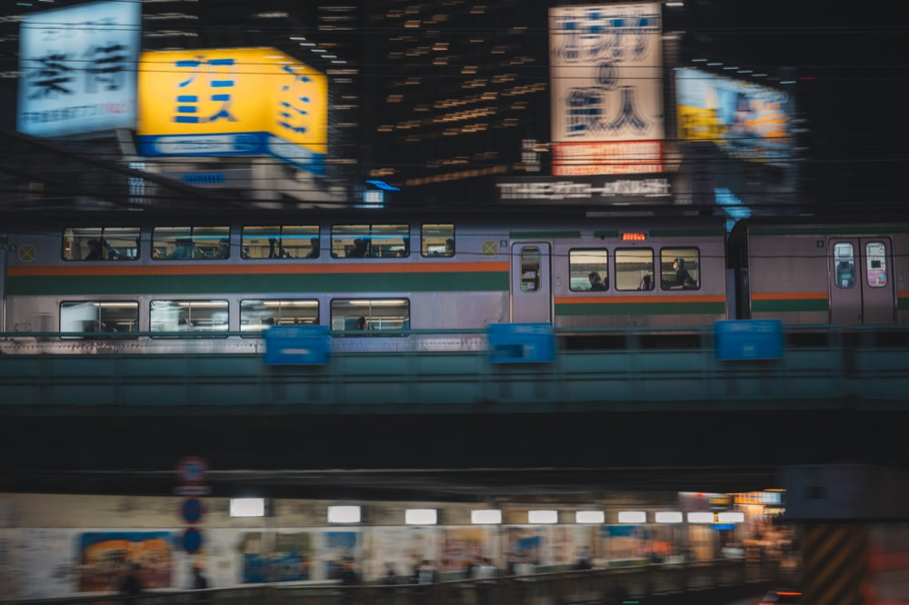
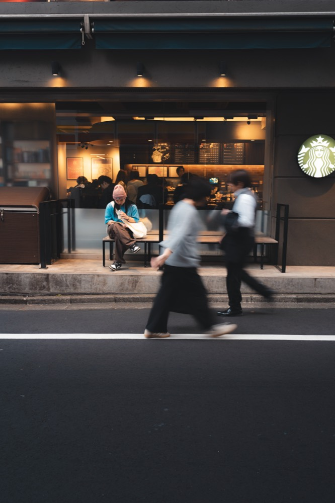
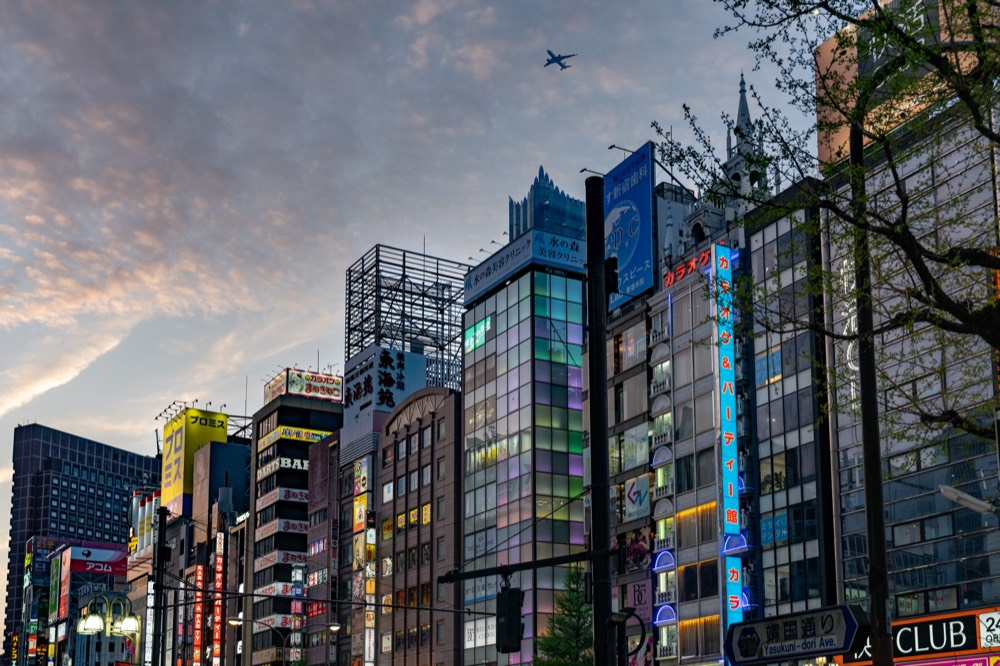
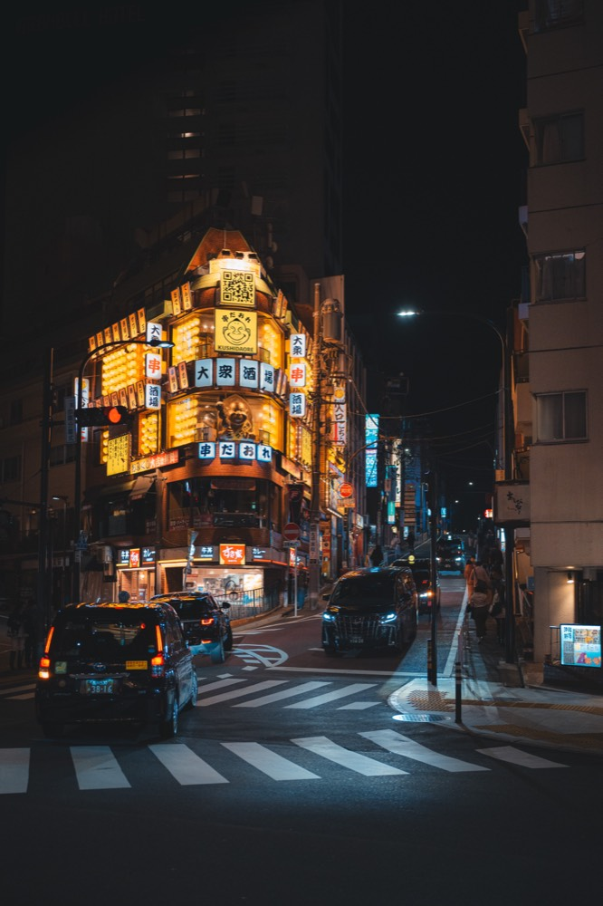

Photography with passion
Hobby photographer — landscapes, architecture & the life in between
View gallery
About me
For several years now, my camera has accompanied me through everyday life — on trips, on walks and in quiet moments. To me, photography is not a job but a way of seeing the world more consciously.
I'm fascinated by natural light, calm compositions and genuine emotions. This site is a collection of my favourite shots — created without pressure, purely out of the joy of seeing and capturing.
Portfolio





Contact
Got a question about a picture or simply want to say hello? I'd love to hear from you.
squaredmoments@gmail.com